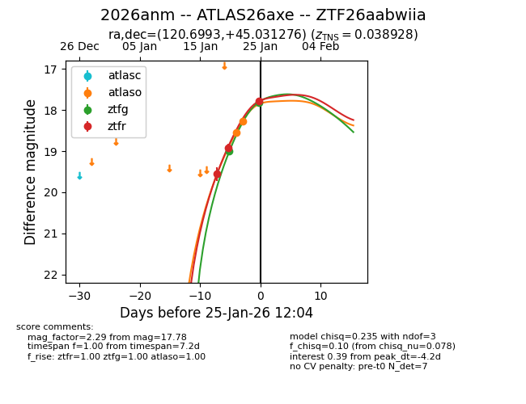
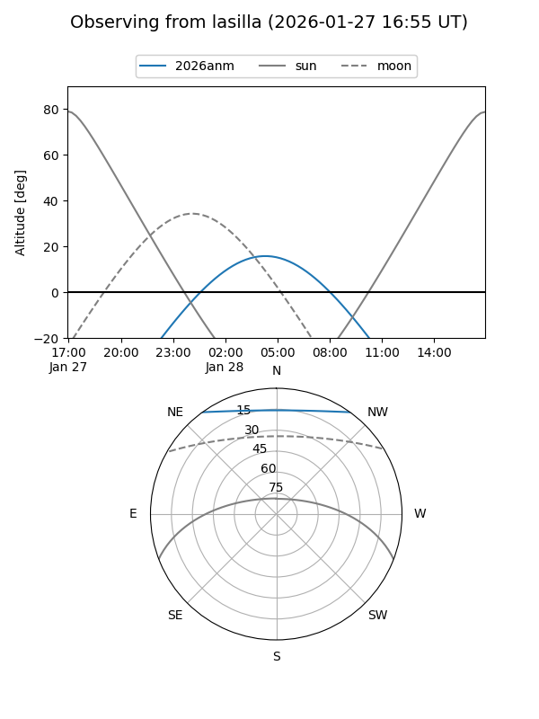
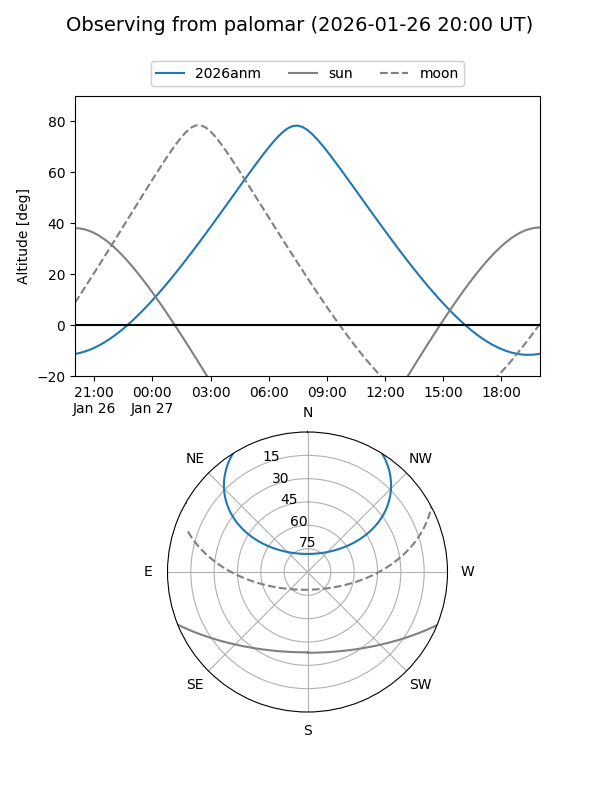
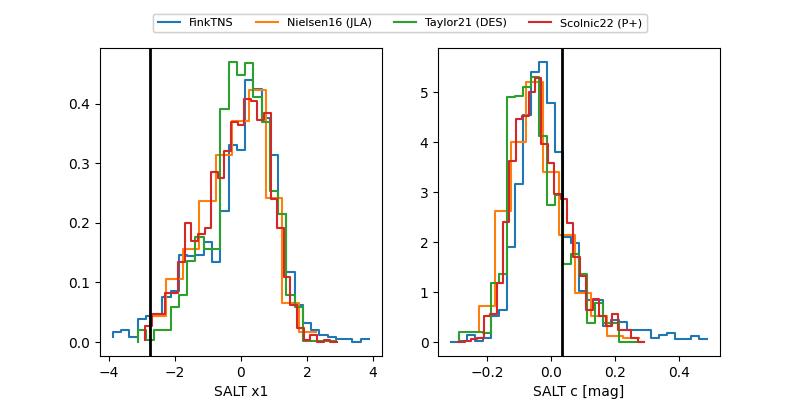

2026anm
Target 2026anm at 2026-01-26 18:56
Aliases and brokers:
FINK: link
Lasair: link
ALeRCE: link
TNS: link
YSE: link
alt names
ZTF26aabwiia (ztf,fink_ztf)
2026anm (tns,yse)
ATLAS26axe (atlas)
Coordinates:
equatorial (ra, dec) = 120.6993,+45.03128
equatorial (HMS+DMS) = 08:02:47.84,+45:01:52.59
galactic (l, b) = (174.6509,+31.01722)
Flags:
confirmed ia
Photometry:
last atlaso=18.27, ztfg=17.81, ztfr=17.78
2 atlaso, 2 ztfg, 3 ztfr detections
Lightcurve

Visibility


Additional plots
